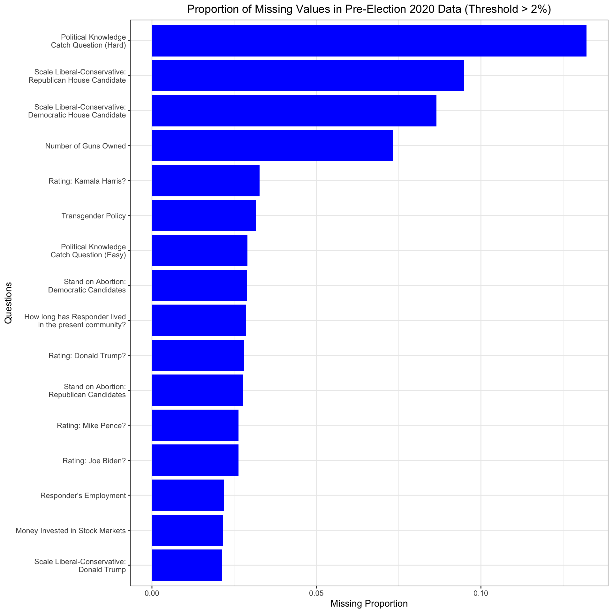

A valuable data source for this project comes from the American National Election Studies (ANES) database.
2.1 Description
Every four years, matching the pattern of presidential elections in the United States, two studies are conducted in the pre-election and post-election periods, with the November Election Day holiday marking the turning point between the two. Each study interviews respondents online, by phone, and through live video software before the voting day. Then, it attempts to re-interview as many of the same respondents as possible after the voting day. Phone and video interviews are facilitated by trained interviewers who belong to ANES.
Raw datasets (with the exclusion of sensitive variables that could identify particular respondents) are available for free in multiple formats, including the .csv one, on the ANES website. These are files with data frames characterized by huge dimensionality (but relatively small file size), where the number of rows (representing respondents) oscillates between ~6-8k, and the number of variables is around ~1.8k. Thus, importing the data is relatively simple as it relies on downloading and reading the respective .csv file. For the 2020 Time Series Study election data (analyzed in the missing values section), there are 8280 respondents and 1771 variables. Some variables are categorical (e.g., yes/no questions), and some are numerical (e.g., age). Sampling weights allowing for correct scalability of results to the entire U.S. voting population are also given.
Variables reflect the two study periods; pre-election variables start with the code “V201,” and post-election variables start with the code “V202.” The exact code-to-question mapping, as well as a thorough description of the methodology covering possible values per question, is accessible in the accompanying “User Guide and Codebook” published alongside each dataset on the ANES website. It is said to be one of the largest datasets on voting, public opinions, and voter tendencies in the United States.
In these datasets, missing values are denoted with “-9” or “-8” codes. The former captures skipped questions and answers that the respondent declined to give; it is also the most prevalent. The latter is less frequent as it encodes the explicit answer “I don’t know,” which might have been given after the respondent was prompted with a specific question. Nevertheless, while missing values conceal some data trends, the sheer number of available variables proves the most challenging to deal with, as any analysis requires a careful variable selection or dimensionality reduction to be performed first. Otherwise, irrelevant factors (noise) might be erroneously considered.
Full Citation (again, specifically for the 2020 data): American National Election Studies. 2021. ANES 2020 Time Series Study Full Release [dataset and documentation]. February 10, 2022 version. www.electionstudies.org
2.2 Missing value analysis
Code
library(tidyverse)
── Attaching core tidyverse packages ──────────────────────── tidyverse 2.0.0 ──
✔ dplyr 1.1.4 ✔ readr 2.1.5
✔ forcats 1.0.0 ✔ stringr 1.5.1
✔ ggplot2 3.5.1 ✔ tibble 3.2.1
✔ lubridate 1.9.3 ✔ tidyr 1.3.1
✔ purrr 1.0.2
── Conflicts ────────────────────────────────────────── tidyverse_conflicts() ──
✖ dplyr::filter() masks stats::filter()
✖ dplyr::lag() masks stats::lag()
ℹ Use the conflicted package (<http://conflicted.r-lib.org/>) to force all conflicts to become errors
Code
library(dplyr)library(ggplot2)library(forcats)
Code
# loading the datasetanes_data <-read_csv("data/raw/anes_timeseries_2020_csv_20220210.csv", show_col_types =FALSE)
Warning: One or more parsing issues, call `problems()` on your data frame for details,
e.g.:
dat <- vroom(...)
problems(dat)
Code
# selecting variables of interestpre_columns <-grep("^V201(00[1-9]|0[1-9][0-9]|[1-5][0-9][0-9]|6[0-5][0-8])$", colnames(anes_data), value =TRUE)pre_election_data <- anes_data[, pre_columns]post_columns <-grep("^V202(00[1-9]|0[1-9][0-9]|[1-6][0-4][0-5])$", colnames(anes_data), value =TRUE)post_election_data <- anes_data[, post_columns]# filtering for NAs encoded as -9pre_columns_with_negative_nine <-sapply(pre_election_data, function(x) any(x ==-9, na.rm =TRUE))pre_missing_data <- pre_election_data[, pre_columns_with_negative_nine]post_columns_with_negative_nine <-sapply(post_election_data, function(x) any(x ==-9, na.rm =TRUE))post_missing_data <- post_election_data[, post_columns_with_negative_nine]# calculating the proportions of missing data and setting the thresholdthreshold <-0.02proportion_negative_nine_pre <-sapply(pre_missing_data, function(x) mean(x ==-9))pre_sorted_proportions <-sort(proportion_negative_nine_pre, decreasing =TRUE)pre_columns_to_include <-names(pre_sorted_proportions[pre_sorted_proportions > threshold])proportion_negative_nine_post <-sapply(post_missing_data, function(x) mean(x ==-9))post_sorted_proportions <-sort(proportion_negative_nine_post, decreasing =TRUE)post_columns_to_include <-names(post_sorted_proportions[post_sorted_proportions > threshold])# helper to map the question codes to full questionsquestion_mapping <-c("V201151"="Rating: Joe Biden?","V201152"="Rating: Donald Trump?","V201153"="Rating: Kamala Harris?","V201154"="Rating: Mike Pence?","V201203"="Scale Liberal-Conservative:\nDonald Trump","V201204"="Scale Liberal-Conservative:\nDemocratic House Candidate","V201205"="Scale Liberal-Conservative:\nRepublican House Candidate","V201338"="Stand on Abortion:\nDemocratic Candidates","V201339"="Stand on Abortion:\nRepublican Candidates","V201409"="Transgender Policy","V201529"="Responder's Employment","V201576"="How long has Responder lived\nin the present community?","V201606"="Money Invested in Stock Markets","V201628"="Number of Guns Owned","V201642"="Political Knowledge\nCatch Question (Hard)","V201644"="Political Knowledge\nCatch Question (Easy)")
Code
# missing data for pre-elections: proportionsmissing_df <-data.frame(variable =names(proportion_negative_nine_pre), missing_proportion = proportion_negative_nine_pre)missing_df_filtered <- missing_df[missing_df$missing_proportion > threshold, ]missing_df_filtered$variable_label <- question_mapping[missing_df_filtered$variable]ggplot(missing_df_filtered, aes(y =reorder(variable_label, missing_proportion), x = missing_proportion)) +geom_bar(stat ="identity", fill ="blue") +labs(title ="Proportion of Missing Values in Pre-Election 2020 Data (Threshold > 2%)",x ="Missing Proportion", y ="Questions") +theme_bw() +theme(plot.title =element_text(hjust =0.5))

The large amount of data makes it necessary to take a very selective approach when looking at missing values. For the purpose of this particular analysis, an emphasis is put on the questions in the pre-election data where the proportion of missing values is above 2%. This threshold was chosen somewhat arbitrarily, but it helps separate the clear outliers from the many questions with missing values within the 1% range.
Not surprisingly, the political knowledge hard catch question has the highest proportion of missing values, with more than 10% of respondents unable to answer it. While this stands out as an extreme case, the next two highest proportions (between 7.5% and 10%) are more interesting. These come from questions asking respondents to place their local Democratic and Republican House candidates on the liberal-conservative scale. Since most respondents are probably familiar with the scale, it is unlikely that a lack of understanding caused the high missing rates here. Instead, it might suggest that many respondents simply do not know their local party candidates, which could be even more common if the candidate is from the opposite party.
The fourth-highest proportion of missing values comes from the question about the number of guns owned, which is likely due to the sensitive nature of this topic. People may be hesitant to share such personal and identifying information.
The fifth-highest missing value proportion comes from the question about rating Kamala Harris, who was running for vice president at the time. In 2020, Harris seemed to have a much higher rate of unrecognizability compared to Mike Pence, Donald Trump’s running mate. This might be because Harris was newer to the national political stage, while Pence was already a well-known figure. Possibly, this could have started a domino-effect extending into the 2024 presidential elections.
Code
# missing data for pre-elections: heatmapset.seed(123)sampled_data <- pre_missing_data[sample(nrow(pre_missing_data), 100), ]tidy_sampled_data <- sampled_data |>rownames_to_column("id") |>pivot_longer(cols =all_of(pre_columns_to_include)) |>mutate(missing =ifelse(value ==-9, "Yes", "No"))tidy_sampled_data$variable_label <- question_mapping[tidy_sampled_data$name]question_order <-c("Rating: Joe Biden?","Rating: Donald Trump?","Rating: Kamala Harris?","Rating: Mike Pence?","Scale Liberal-Conservative:\nDonald Trump","Scale Liberal-Conservative:\nDemocratic House Candidate","Scale Liberal-Conservative:\nRepublican House Candidate","Stand on Abortion:\nDemocratic Candidates","Stand on Abortion:\nRepublican Candidates","Transgender Policy","Responder's Employment","How long has Responder lived\nin the present community?","Money Invested in Stock Markets","Number of Guns Owned","Political Knowledge\nCatch Question (Hard)","Political Knowledge\nCatch Question (Easy)")tidy_sampled_data$variable_label <-factor( tidy_sampled_data$variable_label,levels = question_order)ggplot(tidy_sampled_data, aes(x = variable_label, y = id, fill = missing)) +geom_tile(color ="white") +scale_fill_viridis_d() +labs(title =paste("Pre-Elections 2020 Data with Missing Values (100 Random Samples)"),x ="Variables", y ="Sample Number", fill ="Missing") +theme_bw() +theme(axis.text.x =element_text(angle =90, hjust =1),plot.title =element_text(hjust =0.5))
Creating a meaningful heatmap to show missing value patterns for the same individuals across different questions is tricky because of the large amount of data. To make it more manageable, a (pseudo)random sample of 100 individuals is used, along with the same subset of questions as before–those with more than 2% missing values. However, this method makes it hard to tell if a sequence of missing values happens because someone decided to stop participating in the study. If that is the case, the missing values (shown in yellow) would extend to the far-right side of the heatmap, but there is no way to be sure with the chosen approach.
Some patterns seen earlier show up here, too. For example, respondents who skipped the political knowledge hard catch question also tended to skip the questions about placing their local Democratic and Republican House candidates on the liberal-conservative scale.
Moreover, there seem to be two common patterns when it comes to missing answers. In some cases, the respondent struggles with just one question and skips it rather than selecting “I don’t know.” In other cases, the person skips several questions, which could happen because they lack the knowledge needed to answer these or, perhaps, because they want to finish the survey quickly. While neither hypothesis can be confirmed based on this small sample, these patterns are worth exploring further. For instance, if someone skips just one question about recognizing a candidate, it might mean they truly do not know who that candidate is. On the other hand, skipping multiple questions, like rating or demographic questions, could be a way to hide the respondent’s preferences or identity. Both possibilities are worth considering, and more detailed visualizations could help confirm these trends.